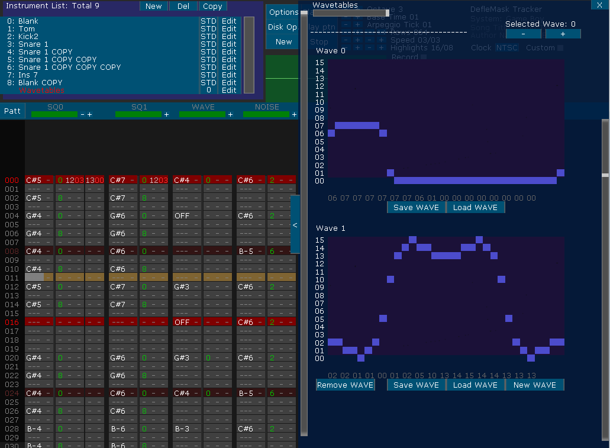

GAME BOY SYSTEM INSTRUMENTS EDITOR MENU:

You can control the volume of every channel in the Game Boy by using the envelope generator; this generator needs 2 values: Start point, and duration. It will decay or increase the volume at a constant rate starting from that start point. You can set the volume to decay or to increase by changing Down/Up parameter.
You have also the Sound Size parameter to make very short sounds, useful for noise and drum making. The point where the sounds gets muted is displayed as a vertical bar.
The WAVE Channel, however, don't have a envelope generator. Also, it range is limited, only independent values can be assigned, from 0..3, 4..7, 8..B and B..F. Set it on the volume column and use volume slide effects.
In order to change dinamically the tones rapidly, you have an Arpeggio Envelope, a Duty Cycle Envelope to change the feeling of the square waves rapidly and a WaveForm Envelope to switch between waves dinamically.

And in order to define the shape of the WAVE channel you have to use the WAVE Editor. You can use more than 1 WAVEFORM, and in order to switch between WAVES you could use the "Selected WAVE" display in the top part of the window, you can also change the selected wave in the instrument list, you have to use the 10xx effect to switch them while a song is playing. Or, as described before, using the WAVEFORM Macro.